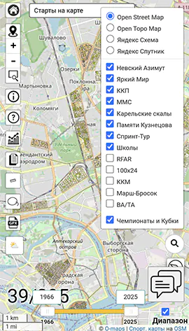
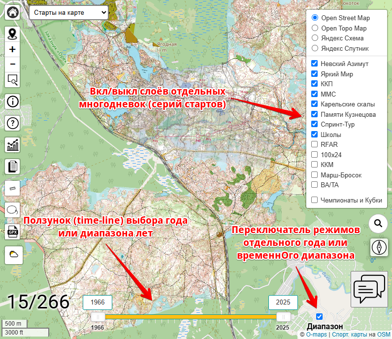
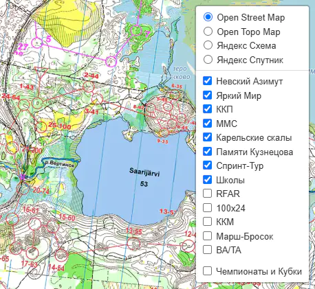
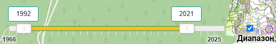
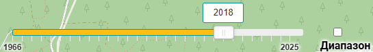
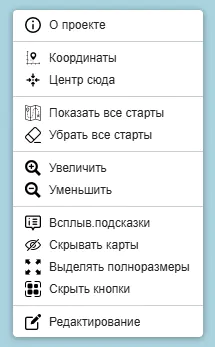

 В отличие от основных страниц с картами разных регионов, тут акцент сделан в большей степени не на картографисечких материалах, а на дистанциях и истории проведения различных соревнований.
Страница Старты на карте организована в целом точно так же как и основные страницы с картами регионов и представляет из себя картографическую подложку с "привязанными" к ней изображениями спортивных карт. Щелчком мыши по любой карте можно вызвать появление всплывающего окна с подробной информацией о ней.
Все карты собраны в группы (слои) по соревнованиям, к которым они относятся, и по году. Все слои соревнований можно включать,выключать независимо друг от друга. Для выбора диапазона лет показываемых карт используется специальный элемент управления - бегунок (или time-line).
Элементы управления

Слои карт
 Карты на этой странице сгруппированы по соревнованиям, дистанции которых на них нанесены:
- Невский Азимут
- Яркий Мир
- ККП
- Мемориал Михаила Святкина
- Карельские скалы
- Памяти Сергея Кузнецова
- Спринт-Тур
- Ориентирование в школу
- Bike/Trail Adventure
- Марш-Бросок
- RFAR
- 100х24
- ККМ
Включать/выключать все эти слои можно независимо друг от друга, используя элемент управления в правой верхней части страницы.
Выбор диапазона дат (time-line)
Для выбора того, карты каких лет показывать на экране, тут используется особый элемент управления - слайдер (бегунок, time-line). Он может работать в двух различных режимах:
- Диапазон дат (годов)
- Выбор одного единственного года (time-line)
Переключение режима осуществляется с помощью галочки (чекбокса) справа от слайдера.
 В режиме "Диапазон" слайдер содержит два бегунка, смещая которые Вы можете выбрать начальный и конечный год врменнОго отрезка для показываемых карт.
 В режиме "Time-line" бегунок только один. Соответственно, перемещая его мы выбираем тот единственный год, к которому относятся показываемые карты/дистанции. Т.о. очень наглядно видно, как перемещались районы соревнований от года к году - своеобразная "лента времени".
Всплывающее (контекстное) меню
 "Всплывающее" меню на этой странице очень похоже на аналогичное меню на основных страницах. Разница лишь в том, что вместо включения/выключения слоёв всех типов карт тут аналогично переключаются слои карт всех соревнований.